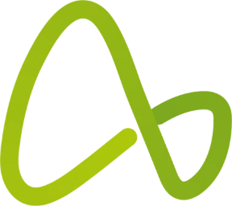

Curadoria de fotosConferindo o acesso.

Curadoria de fotosConferindo o acesso.
Desmarque um tema para tirá-lo da fila. As decisões já tomadas continuam guardadas.
Cole endereços de fotos do Unsplash ou do Pexels, um por linha ou todos juntos. Elas entram no começo da fila.
Para buscar daqui, salve uma chave do Unsplash ou do Pexels em Ajustes.
Copie o resultado e envie para quem cuida do manual. O arquivo diz o banco, o código, o tema, o enquadramento e a paleta em que cada foto foi aprovada.
Opcionais. Com elas a página carrega cada foto pela API do banco e busca fotos novas. Ficam só neste aparelho.
Esta página usa a sessão do SOMA. Sair daqui também encerra o SOMA neste aparelho.
Apaga as decisões e as fotos adicionadas neste aparelho. Copie o resultado antes.